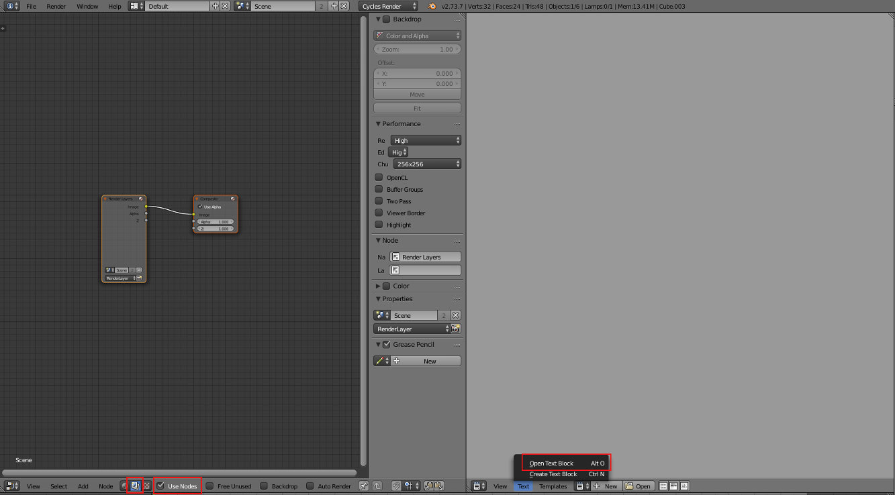
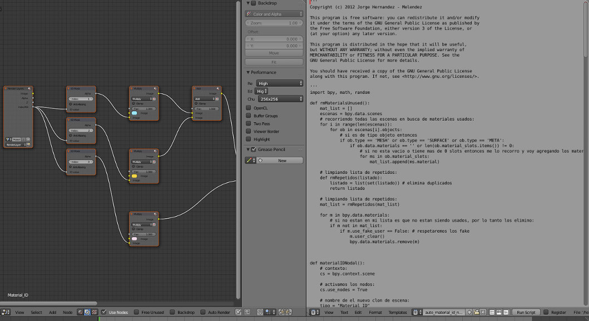
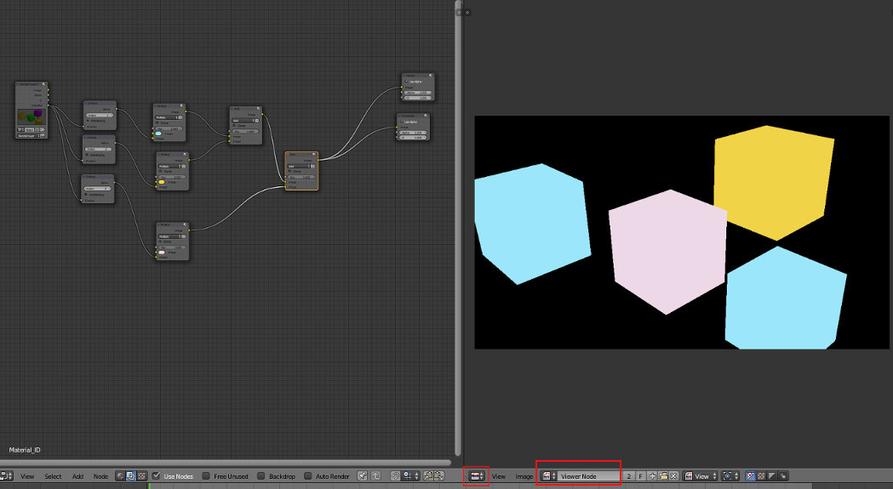
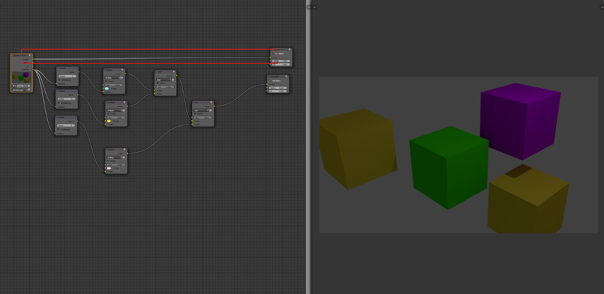
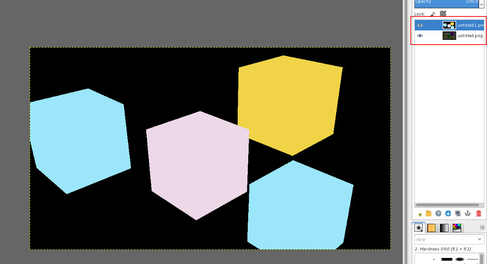
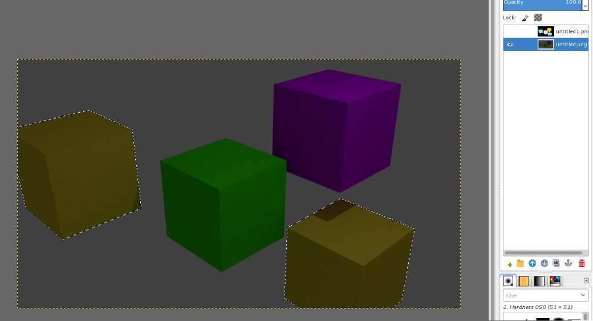
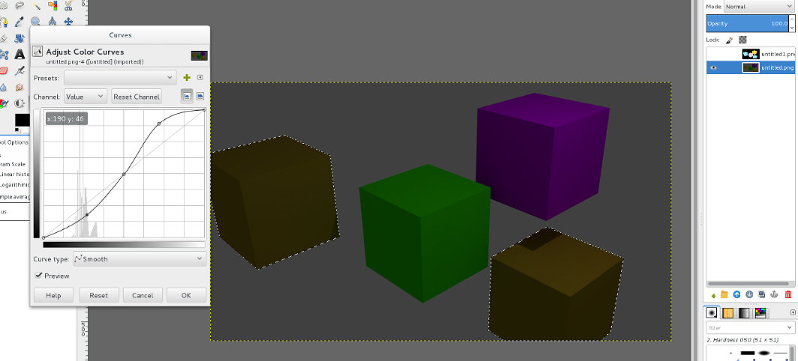

Renderizar um Material ID
Introdução
Renderizar uma material ID é uma funcionalidade que algumas aplicações disponibilizam que permite criar um render que funciona como máscara para facilitar a seleção de materiais em aplicações de edição de imagem (i.e. gimp, etc.). Ou seja, permite, por exemplo, manipular materiais individualmente sem necessidade de voltar a renderizar.
O Blender não disponibiliza essa funcionalidade útil de origem mas é possível obter o mesmo resultado através do script Automatic Material ID Nodal de Jorge Hernández – Meléndez.
Para completar o exercício seguinte, descarregue o ficheiro zipado do endereço acima e descompacte o mesmo.
Exercício em Cycles
1. Ative o renderizador Cycles e crie uma cena com 4 cubos e 3 materiais. Na imagem abaixo, os dois cubos amarelos estão a partilhar o mesmo material.

2. Divida a sua área de trabalho em 2 janelas: Node Editor e Text Editor. No Node Editor, certifique-se que está no Compositor e tem Use Nodes ativo. No Text Editor, utilize o menu Text > Open Text Block e selecione o ficheiro auto_material_id_nodal.py que descarregou.
3. Depois de abrir o script, execute o mesmo: utilize o botão Run Script ou a opção Run Script no menu Text. Irá ser feita uma renderização da cena e gerada uma árvore de nós no compositor. Na realidade, irá ser feita uma dupla renderização: render normal da cena e um render onde todos os materiais utilizados irão ser substituídos por cores difusas e "shadeless".
4. Como já não é necessário o Text Editor, substitua-o pelo UV/Image Editor. No UV/Image Editor, ative a opção Viewer Node para poder ver a imagem gerada. Grave esta imagem (menu Imagem > Save as Image).
5. Altere a ligação no compositor, ligando diretamente do nó de input (Render Layer) para o nó de output (Viewer), para ver no UV/Image Editor a imagem renderizada da cena. Grave também esta imagem.
6. No seu editor de imagem favorito, carregue as duas imagens como camadas (layers).
7. Agora, utilize a máscara para selecionar uma dos cores que identifica os materiais. Na imagem abaixo foi utilizada a ferramenta Select By Color e escolhida a cor azul claro. Repare que estão selecionados os dois cubos amarelos (a camada da máscara foi desativada após feita a seleção para poder ver melhor o resultado pretendido).
8. Na camada com a imagem da renderização da cena aplique os efeitos e modificações que entender necessários. Estas operações só serão aplicadas às áreas selecionadas.
